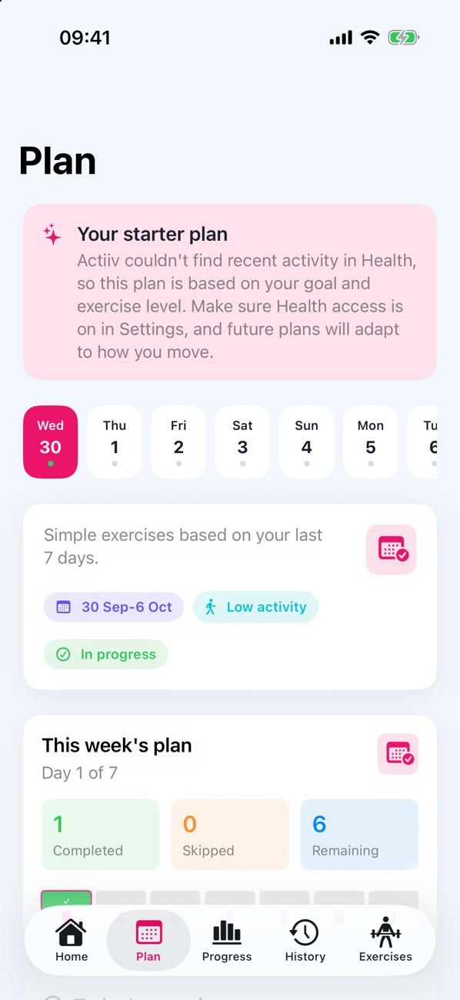
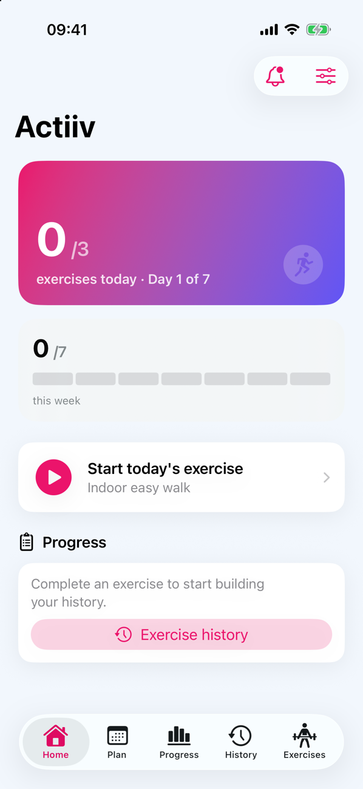
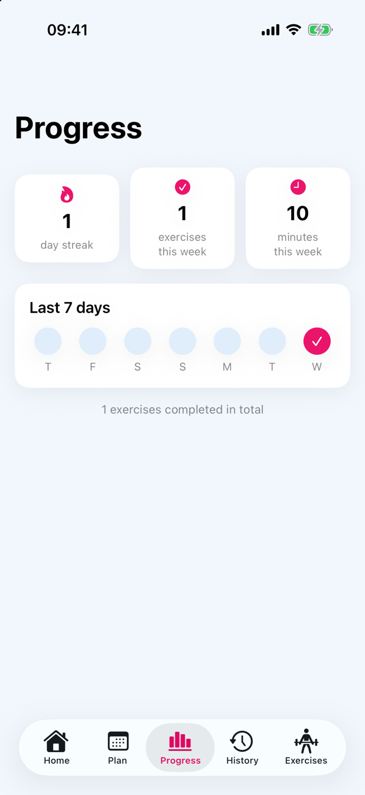
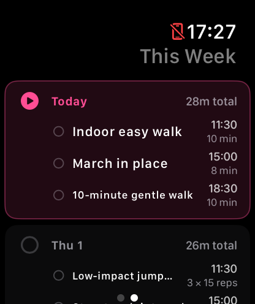
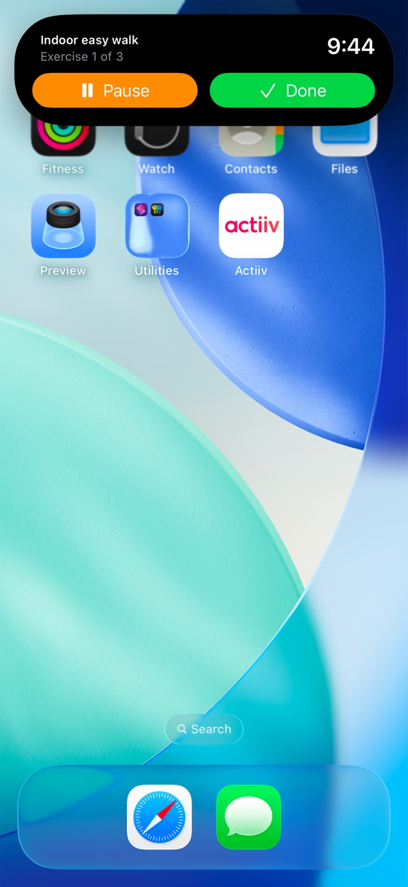
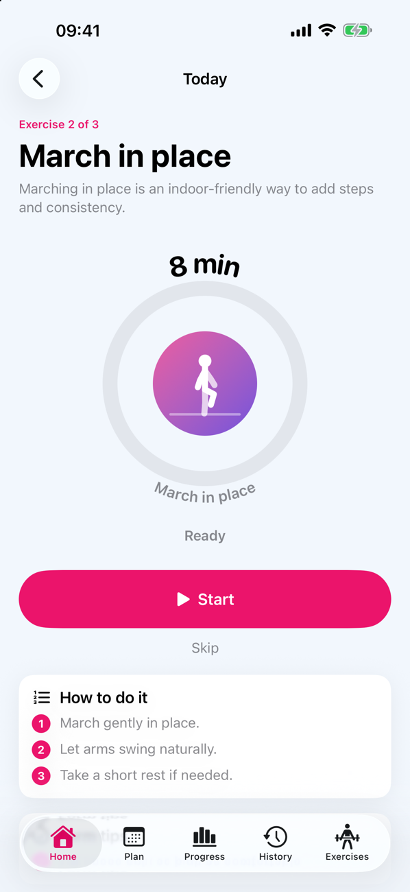
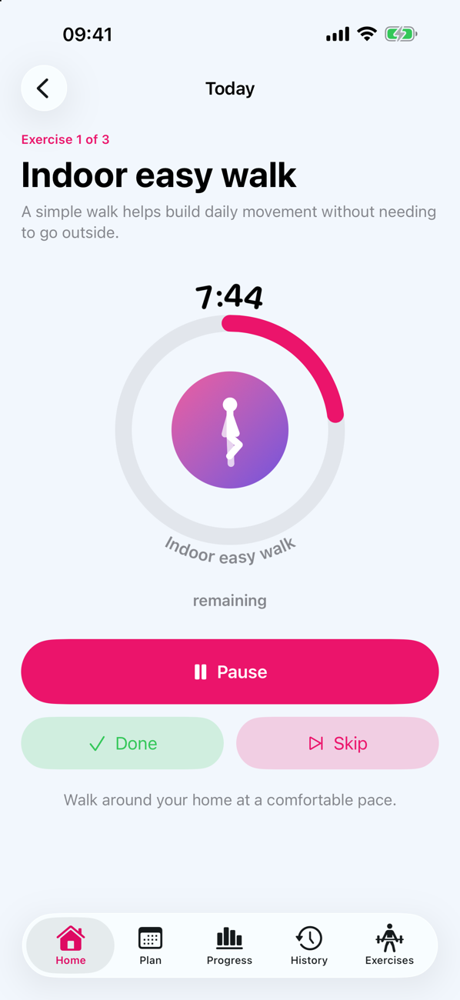
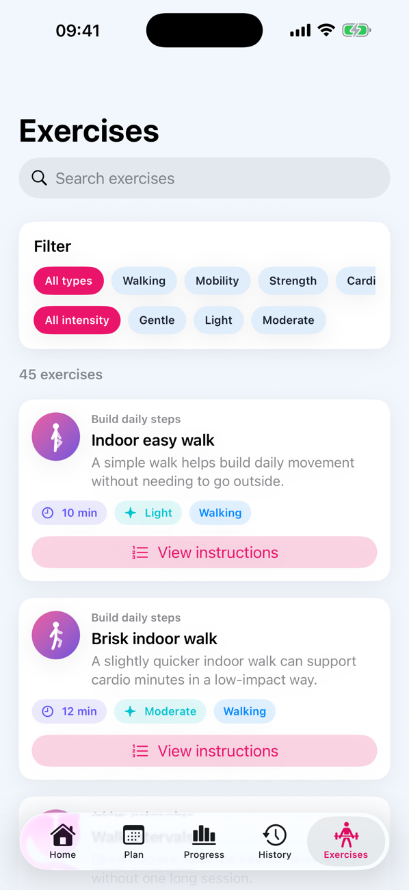

A plan that fits
Seven days of short exercises in six types: walking, mobility, strength, cardio, recovery and stretching. If Apple Health has no history yet, you start with a gentle starter plan.
Tell Actiiv your goal and how hard you want to go. It builds a simple plan of exercises you can do at home, with no equipment, reminds you at sensible times, and adjusts as you tell it what felt right.
Works with or without an Apple Watch. Requires iOS 26.4 or later.




Setup is short, and you can skip anything you would rather not share.
Reduce sitting, move more, build strength, improve cardio, stay consistent or recover well.
Soft, Medium, Pro or Extreme. You can change it whenever it stops feeling right.
A week of exercises built from your goal, your level and, if you allow it, your recent activity in Apple Health.
Too easy, about right or too hard. Future plans take that into account.
Seven days of short exercises in six types: walking, mobility, strength, cardio, recovery and stretching. If Apple Health has no history yet, you start with a gentle starter plan.
Soft sessions are about 5 to 8 minutes. Extreme sessions run 15 to 20. Your birth year, if you share it, keeps suggestions suitable for your age.
Each exercise gets a reminder at a planned time. Tap Done, Snooze for 30 minutes or Skip straight from the notification.
Start an exercise, leave the app, and pause, resume or finish it from the Dynamic Island or Lock Screen. A "Time's up" alert tells you when the timer ends.
Without a Watch, Actiiv can notice from your step count that you have been still for a while, and suggest your next exercise. It stays inside your active hours.
A day streak, exercises and minutes this week, and a seven-day strip. Skipping one exercise skips only that one, so a bad moment does not ruin the day.
Once an exercise is running, it stays in the Dynamic Island and on your Lock Screen with a live countdown.




Pick the intensity that feels right today. Nothing is locked.
If you wear an Apple Watch, Actiiv can send your exercises to your wrist and remind you there. The Watch shows today's exercises and the week ahead, with the time each one is due, and finished exercises can be saved to Apple Health as workouts.
No Watch? Everything else works on your iPhone alone: reminders, exercises, the Dynamic Island, nudges and progress. Actiiv detects which you have, and you can change it in Settings.
Actiiv reads Apple Health only with your permission, does its work on your device, and has no ads, no tracking and no analytics. Read the privacy policy.
No. Actiiv works fully on an iPhone. A Watch adds exercises and reminders on your wrist and movement breaks.
An iPhone running iOS 26.4 or later. The Watch app needs watchOS 26.4 or later.
No. If you do, Actiiv uses your recent steps, activity and workouts to fit your plan. If you do not, you get a gentle starter plan based on your goal and level, and it still works.
No. Actiiv gives general wellness and exercise suggestions. It is not a medical device and does not diagnose or treat anything. If you have a health condition, are pregnant, or are unsure whether an exercise is safe for you, talk to a doctor or other qualified professional first, and stop if you feel pain or unwell.
No. Signing in with Apple is optional. Your plan and settings are saved to your own iCloud, and signing in with Apple restores them on a new device.
Actiiv is a subscription with a 7-day free trial, billed monthly or yearly. The price is shown in the app and on the App Store before you subscribe. The subscription renews automatically until you cancel, and you can cancel at any time in your Apple ID settings. If you cancel during the trial you are not charged. If your subscription ends, Actiiv asks you to subscribe again to keep using it.
Yes. Open Actiiv and tap Restore purchases on the subscription screen, or in Settings. It uses the Apple ID you subscribed with.
See the support page for common fixes and how to contact us.
Try Actiiv free for 7 days, then choose monthly or yearly. Cancel any time in your Apple ID settings. No ads. Coming to the App Store.
Questions? Contact us